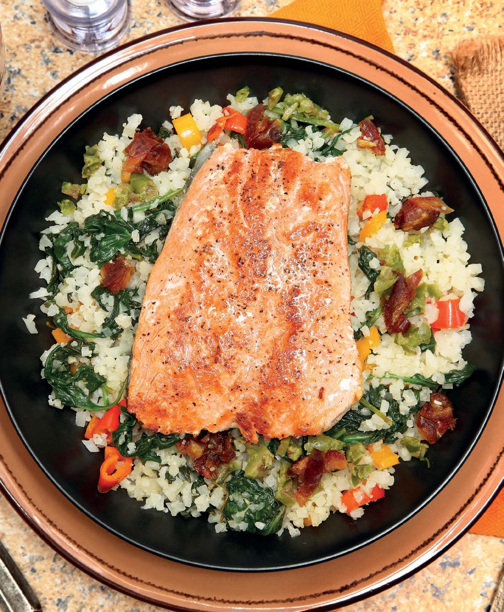

Smoked Salmon with Cauliflower
Home

Description
This page will show and inform you on the gift to humanity know as Smoked Salmon with Cauliflower rice. Here we show anyone how to make the tastiest salmon your mouth and tastebuds will have ever had!
Ingredients:
- 1 1/4 cups coarsely chopped fresh asparagus, blanched
- 1 cup chopped bell pepper
- 1/2 cup chopped white or red onion
- 1 clove garlic, minced
- 2 Tablespoons olive oil
- 3 cups cauliflower rice
- 1 1/2 cups halved or quartered grape or small cherry tomatoes
- 3-4 cups arugula or spring salad blend
- 1 4 ounce piece smoked salmon per person (3-4)
- Lemon-Dill Vinaigrette
- 1 Tablespoon chopped fresh dill
- 3 Tablespoons fresh lemon juice
- 2 teaspoons extra-virgin olive oil
- 1/4 teaspoon salt (or to taste)
- 1/4 teaspoon freshly ground black pepper
- Freshly cracked black pepper
INSTRUCTIONS:
- Step 1:Whisk together all ingredients; set aside and whisk again before adding to cauliflower rice mixture.
- Step 2:In a large skillet, heat olive oil over medium heat. Add bell pepper and onion. Sauté until vegetables are tender, 5-6 minutes.
- Step 3:
Add minced garlic and cauliflower rice, cooking until cauliflower is tender.
- Step 4:Remove from heat. Toss with Lemon-Dill Vinaigrette. Stir in tomatoes.
- Step 5:Chill.
- Step 6:Warm salmon, if desired.
- Step 7:Place arugula on chilled salad plates.
- Step 8:Top arugula with cauliflower rice salad.Add warmed salmon over salad.